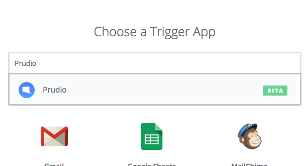
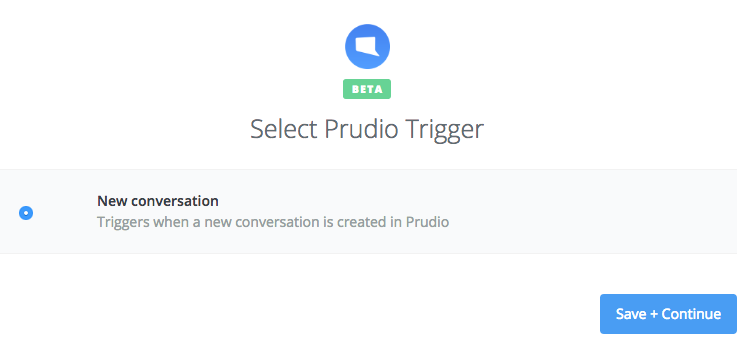
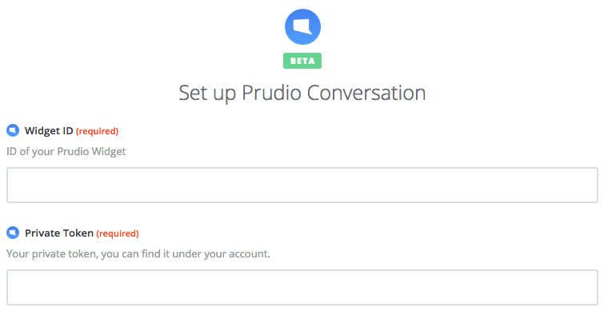
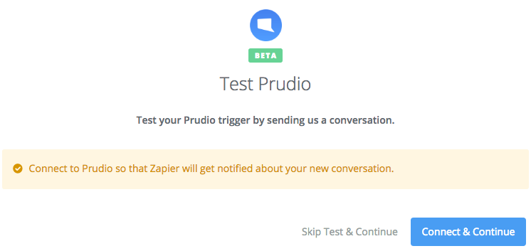

Heads up: This integration is still in Beta.

Zapier Integration
Please follow the steps bellow.
Invitation
Required First of all you will need to accept the Zapier invitation to use the Beta version of Prudio. After we are sure this integration works has expected we will make it public for everyone.
Create your Zap
Search for "Prudio" as your Trigger App in the search bar. 
Trigger
Choose the "New Conversation" trigger and continue. 
Identify your Widget
Go to your Prudio Dashboard and choose the integrations menu for the widget you want to integrate. Copy and paste the Widget ID and Secure Token into Zapier. 
Test it
Click the "Test & Continue" button 
Done
You are done, now just select one of the hundreds actions available from Zapier.